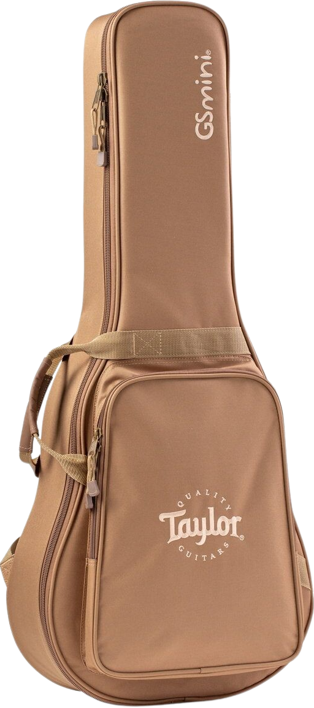

Features
Some of the features and accessories of the GS Mini Mahogany
- Padded Taylor Gig Bag
- Solid Mahogany Top
- Layered Sapele Back and Sides
- Smaller Scale Length For Increased Playability
With it's solid mahogany top and layered sapele back and sides, the GS Mini delivers a warm and mid-range focused sound.
order nowE
A
D
G
B
e
Chord Selected